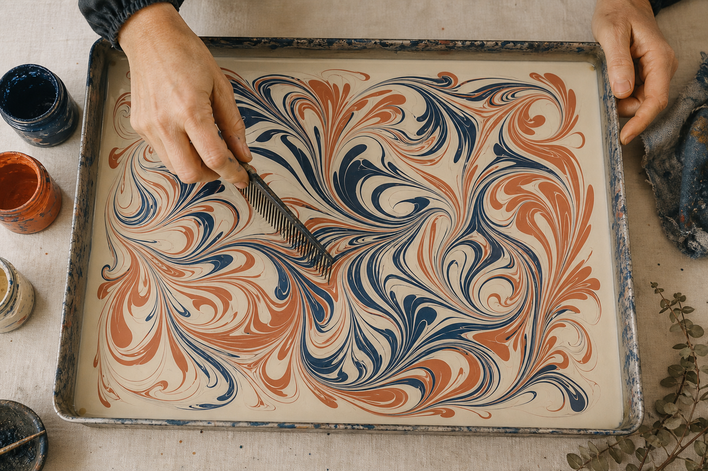
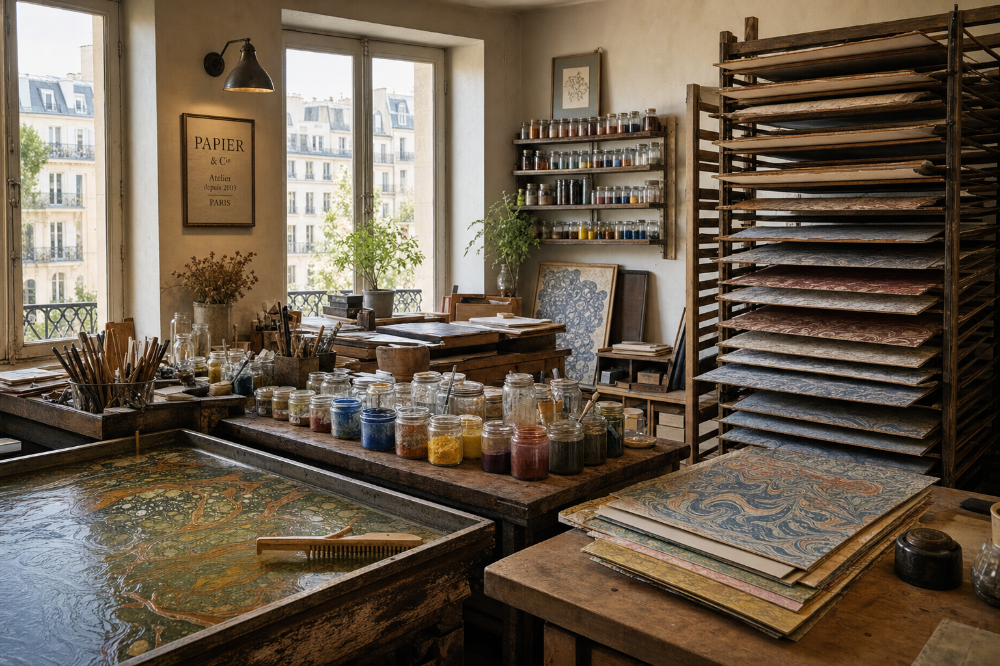

Pourquoi nous cousons toujours nos carnets à la main
La couture à la main demande quarante minutes par carnet. C'est long, mais c'est ce qui permet aux pages de s'ouvrir parfaitement à plat, sans contraindre la plume.
Lire l'article → Article vedette · Histoire
Article vedette · Histoire
La couture à la main demande quarante minutes par carnet. C'est long, mais c'est ce qui permet aux pages de s'ouvrir parfaitement à plat, sans contraindre la plume.
Lire l'article →
Pourquoi cette algue irlandaise s'est imposée comme support universel du marbrage occidental ? Une petite enquête entre Brest et Galway.
Lire l'article →Nous avons passé trois jours dans l'atelier de M. Mori, héritier de la sixième génération d'une lignée de papetiers japonais.
Lire l'article →
Reportage dans le dernier moulin à papier de France à fabriquer du papier chiffon à la cuve, comme au XVIIIe siècle.
Lire l'article →
De l'usage scolaire à la disparition presque totale, en passant par les buvards publicitaires des années trente.
Lire l'article →